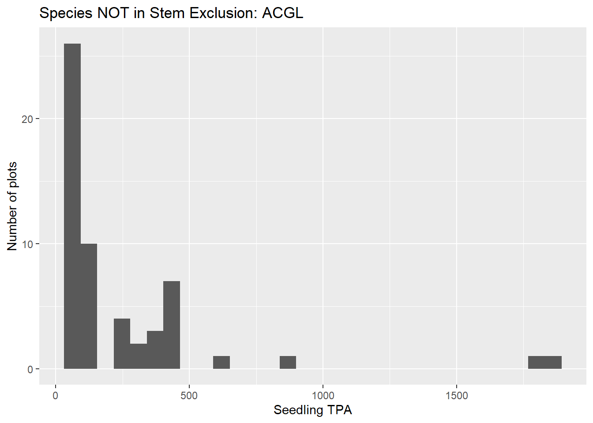
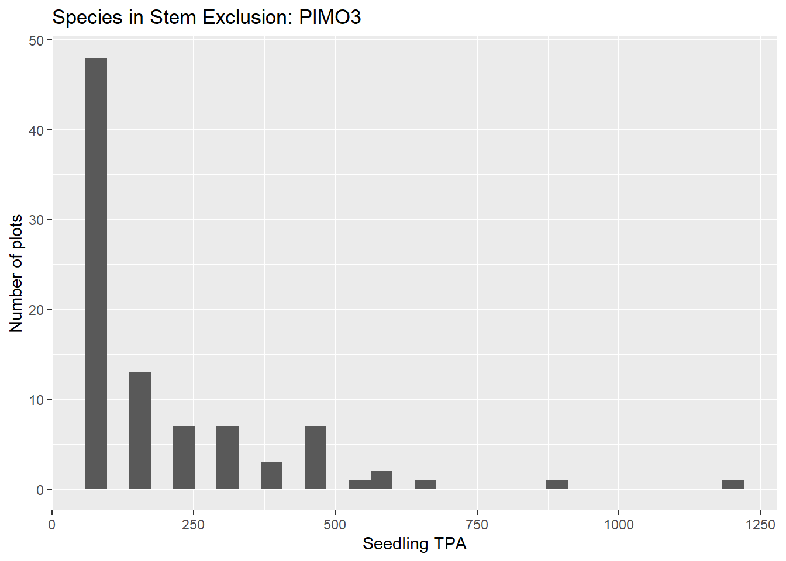

rm(list =ls()) gc() # Data tidying and acceslibrary(tidyverse, quietly = T) # Easy to read syntax and data manipulation library(RSQLite) # Access SQLite dbs library(magrittr) # Pipes and math functions # library(readxl) # Read xlsx # library(writexl) # write xlsx library(foreign) # Write dbf# yaImpute and related # library(yaImpute) # RF imputation # library(vegan) # Something to do the yaImpute # library(randomForest) # RF package that yaImpute uses # plots and tables # library(esquisse) # Quick data visualization # library(knitr) # Better html tables# library(DT) # Data tables for Java script tables in HTML# library(kableExtra) # Better html tables, change sizes # library(feather) # Faster data retrieval # Geography# library(sf) # Simple Features/vector data# library(terra) # Raster functions# library(spatstat) # Spatial stats# No sci-notation. options(scipen =999)
Functions
Code
clean_mem <-function() { x <-ls(envir = .GlobalEnv)# ls()[!(ls() %in% keep)]rm(list = x[!(x %in% keep)], envir = .GlobalEnv)gc()}keep <-c("keep", "clean_mem", "clean_na_cols", "db_list", "add_commas")clean_na_cols <-function(df){ df <- df[, colSums(is.na(df)) <nrow(df)]}db_list <-function(df, CN_col){ name <-NULL name <- df |>select({{CN_col}}) name <- name |>mutate(CN_col =str_c("'", {{CN_col}}, "'")) name <-str_flatten_comma(name$CN_col)# name <- str_flatten_comma(name[, CN_col]) name}add_commas <-function(n) { t <-prettyNum(n, ",",scientific=FALSE)return(noquote(t))}
Created on
[1] "2024-10-01 10:37:54 PDT"
Last updated on
[1] "2024-10-01 14:21:48 PDT"
Import imp_data from RF Prep DB
Code
con <-dbConnect(RSQLite::SQLite(), "C:/RxFire/Regen/Regeneration_2_16Sept24/data/homemade_fvs_db_17sept24.db")plants_ref <-dbGetQuery(con, str_c("select * from plants_ref"))# seedlings <- dbGetQuery(con, str_c("select * from seedling where PLT_CN in (", cns, ")"))dbDisconnect(con)
Import Structural Statistics table from FVS output
Code
outputDatabase <-"C:/RxFire/Regen/FVS/regen_091724_2118/regen_091724_2118.db"con <-dbConnect(RSQLite::SQLite(), outputDatabase)key <-dbGetQuery(con, "select CaseID, StandID, Variant from FVS_Cases")cc <-dbGetQuery(con, "select CaseID, Year, CC from FVS_Compute")ba_sdi <-dbGetQuery(con, "select CaseID, Year, BA, SDI from FVS_Summary2")stem <-dbGetQuery(con, "select CaseID, Year, Structure_Class from FVS_StrClass where Removal_Code == 0 ")dbDisconnect(con)xVars <-left_join(key, cc, join_by(CaseID))xVars <-left_join(xVars, ba_sdi, join_by(CaseID, Year))xVars <-left_join(xVars, stem, join_by(CaseID, Year))keep <-append(keep, c("xVars", "standlist", "plants_ref"))
Plotting histograms of species both tagged as SE and not side-by-side
Code
for(i in1:21) { p <- stem_ex_seedlings %>%filter(SYMBL == spp[i]) %>%ggplot() +aes(x = TPA_UNADJ) +geom_histogram(bins =30) +labs(title =str_c("Species in Stem Exclusion: ", spp[i])) +ylab("Number of plots") +xlab("Seedling TPA")print(p) p <- not_stem_ex_seedlings %>%filter(SYMBL == spp[i]) %>%ggplot() +aes(x = TPA_UNADJ) +geom_histogram(bins =30) +labs(title =str_c("Species NOT in Stem Exclusion: ", spp[i])) +ylab("Number of plots") +xlab("Seedling TPA")print(p)}


There were more seedling species, but they get down to ones and twos after this.
Preds
Plotting predictors for SE v. not
Code
preds <-c("CC", "BA", "SDI")t <- stem_ex %>%select(CC, BA, SDI)t2 <- not_stem_ex %>%select(CC, BA, SDI)for(i in1:length(preds)) { p <- t %>%ggplot() +aes(x = t[, i]) +geom_histogram(bins =30) +labs(title =str_c("Species in Stem Exclusion: ", preds[i])) +ylab("Number of plots") +xlab(preds[i])print(p) p <- t2 %>%ggplot() +aes(x = t2[,i]) +geom_histogram(bins =30) +labs(title =str_c("Species NOT in Stem Exclusion: ", preds[i])) +ylab("Number of plots") +xlab(preds[i])print(p)}
FVS’s explanation
Initially defined strata must have over 5 percent canopy cover or they are rejected. Nominal stratum diameter and height are computed by averaging the nine sample trees centered on the 70th percentile tree. Once the strata are defined, the stand is classified as bare ground (BG), stand initiation (SI), stem exclusion (SE), understory reinitiation (UR), young forest multistrata (YM), old forest single stratum (OS), or old forest multistrata (OM) as a function of the number of strata, the nominal diameter of trees in the strata, and stocking.
Filtered plots
I can not find the R script that I made to tag all of the filtered plots. I fear that I may have accidentally deleted it. The following file is the output from that script. I went through the steps of the notes in pages 1-2, raw FIA plots to FVS variables. I stopped the process at FVS because there were 53,000 subplots that would have needed to be run in FVS. The largest one that I have ever run was about 11,000 plots, and that took about 5 hours. I thought that I saved the script, and intended to run it over the weekend, but I had other responsibilities.
Tracking Filter
This is essentially scratch. I used the 53,000 subplots/conditions list that I made while adding filtering tags to pull all non-periodic plots from FIA. Those CNs were used to create ArcPro feature classes to display the data. For each of the pre-FVS filtering steps, I extracted the Plt_CN and location, then wrote it to a dbf and added it to the map.
Find and write all points not in the 13k to find periodic plots
Code
test <-anti_join(points, tracking_plots, join_by(CN == PLT_CN))test %>%arrange(nchar(CN)) %>%head()
CN
LAT
LON
24352
45.70541
-121.0679
24354
45.64929
-121.1151
24355
47.91016
-118.5972
24357
47.85655
-118.2008
24359
47.85683
-118.3094
24360
47.86439
-118.4609
Code
test <- test %>%drop_na()# test %>% filter(CN == "17959")# write.dbf(test, "C:/RxFire/Regen/Regeneration_2_16Sept24/data/FIA_PLOTS_Periodic_30Sept24.dbf")
There are two ways that I use to find the periodic plots, the better way would have been to use design code. In the moment, I used the length of the PLT_CN. Short PLT_CNs are periodic, in my experience. I used design code when I filtered the tracking plots to find the ~13k. The plots from FIA that were not in that list are listed above, but arranged by the length of PLT_CN.
Fire
These all follow the same patter, find the plots with the titled filtering criteria, then write a .dbf.
cns <- fortyp_null %>%select(PLT_CN) %>%unique()cns <-db_list(cns, PLT_CN)con <-dbConnect(RSQLite::SQLite(), "c:/RxFire/Data/_FIADB_WA.db")trees_null <-dbGetQuery(con, str_c("select * from TREE where PLT_CN in (", cns, ")"))seeds_null <-dbGetQuery(con, str_c("select * from SEEDLING where PLT_CN in (", cns, ")"))plots_null <-dbGetQuery(con, str_c("select * from PLOT where CN in (", cns, ")"))dbDisconnect(con)
Number of Null Fortyp plot_CNs
Code
n_distinct(plots_null$CN)
[1] 7850
Number of NULL FORTYP PLT_CNs in tree table
Code
n_distinct(trees_null$PLT_CN)
[1] 2312
writing a .dbf to map null fortyp
Code
t <- plots_null %>%select(CN, LAT, LON)# write.dbf(t, "C:/RxFire/Regen/Regeneration_2_16Sept24/data/FIA_PLOTS_NULLFORTYPCD_30Sept24.dbf")cn_pnull <- plots_null %>%select(CN)
PLT_CN Has_trees Has_seedlings FORTYPCD FLDTYPCD
Length:7850 Mode :logical Mode :logical Min. : NA Min. : NA
Class :character FALSE:5538 FALSE:6311 1st Qu.: NA 1st Qu.: NA
Mode :character TRUE :2312 TRUE :1539 Median : NA Median : NA
Mean :NaN Mean :NaN
3rd Qu.: NA 3rd Qu.: NA
Max. : NA Max. : NA
NA's :7850 NA's :7850